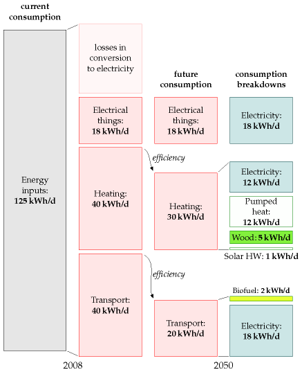
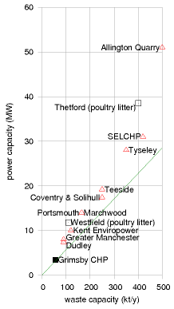
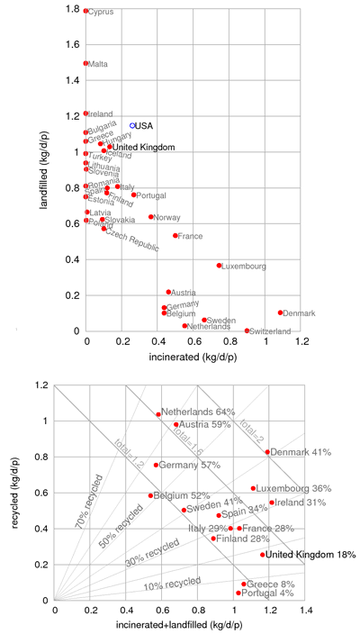
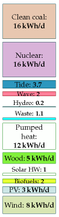
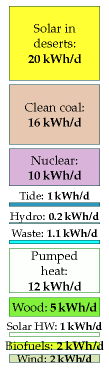
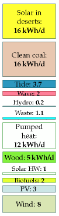
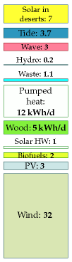
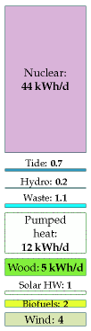
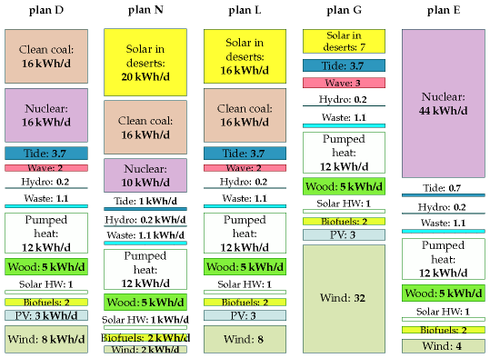

27 Five energy plans for Britain
If we are to get off our current fossil fuel addiction we need a plan for radical action. And the plan needs to add up. The plan also needs a political and financial roadmap. Politics and economics are not part of this book’s brief, so here I will simply discuss what the technical side of a plan that adds up might look like.
There are many plans that add up. In this chapter I will describe five. Please don’t take any of the plans I present as “the author’s recommended solution.” My sole recommendation is this:
Make sure your policies include a plan that adds up!
Each plan has a consumption side and a production side: we have to specify how much power our country will be consuming, and how that power is to be produced. To avoid the plans’ taking many pages, I deal with a cartoon of our country, in which we consume power in just three forms: transport, heating, and electricity. This is a drastic simplification, omitting industry, farming, food, imports, and so forth. But I hope it’s a helpful simplification, allowing us to compare and contrast alternative plans in one minute. Eventually we’ll need more detailed plans, but today, we are so far from our destination that I think a simple cartoon is the best way to capture the issues.
I’ll present a few plans that I believe are technically feasible for the UK by 2050. All will share the same consumption side. I emphasize again, this doesn’t mean that I think this is the correct plan for consumption, or the only plan. I just want to avoid overwhelming you with a proliferation of plans. On the production side, I will describe a range of plans using different mixes of renewables, “clean coal,” and nuclear power.
The current situation
The current situation in our cartoon country is as follows. Transport (of both humans and stuff) uses 40 kWh/d per person. Most of that energy is currently consumed as petrol, diesel, or kerosene. Heating of air and water uses 40 kWh/d per person. Much of that energy is currently provided by natural gas. Delivered electricity amounts to 18 kWh/d/p and uses fuel (mainly coal, gas, and nuclear) with an energy content of 45 kWh/d/p. The remaining 27 kWh/d/p goes up cooling towers (25 kWh/d/p) and is lost in the wires of the distribution network (2 kWh/d/p). The total energy input to this present-day cartoon country is 125 kWh/d per person.

Figure 27.1. Current consumption per person in “cartoon Britain 2008” (left two columns), and a future consumption plan, along with a possible breakdown of fuels (right two columns). This plan requires that electricity supply be increased from 18 to 48 kWh/d per person of electricity.
Common features of all five plans
In my future cartoon country, the energy consumption is reduced by using more efficient technology for transport and heating.
In the five plans for the future, transport is largely electrified. Electric engines are more efficient than petrol engines, so the energy required for transport is reduced. Public transport (also largely electrified) is better integrated, better personalized, and better patronized. I’ve assumed that electrification makes transport about four times more efficient, and that economic growth cancels out some of these savings, so that the net effect is a halving of energy consumption for transport. There are a few essential vehicles that can’t be easily electrified, and for those we make our own liquid fuels (for example biodiesel or biomethanol or cellulosic bioethanol). The energy for transport is 18 kWh/d/p of electricity and 2 kWh/d/p of liquid fuels. The electric vehicles’ batteries serve as an energy storage facility, helping to cope with fluctuations of electricity supply and demand. The area required for the biofuel production is about 12% of the UK (500 m2 per person), assuming that biofuel production comes from 1%-efficient plants and that conversion of plant to fuel is 33% efficient. Alternatively, the biofuels could be imported if we could persuade other countries to devote the required (Wales-sized) area of agricultural land to biofuels for us.
In all five plans, the energy consumption of heating is reduced by improving the insulation of all buildings, and improving the control of temperature (through thermostats, education, and the promotion of sweater-wearing by sexy personalities). New buildings (all those built from 2010 onwards) are really well insulated and require almost no space heating. Old buildings (which will still dominate in 2050) are mainly heated by airsource heat pumps and ground-source heat pumps. Some water heating is delivered by solar panels (2.5 square metres on every house), some by heat pumps, and some by electricity. Some buildings located near to managed forests and energy-crop plantations are heated by biomass. The power required for heating is thus reduced from 40 kWh/d/p to 12 kWh/d/p of electricity, 1 kWh/d/p of solar hot water, and 5 kWh/d/p of wood.
The wood for making heat (or possibly combined heat and power) comes from nearby forests and energy crops (perhaps miscanthus grass, willow, or poplar) covering a land area of 30 000 km2, or 500 m2 per person; this corresponds to 18% of the UK’s agricultural land, which has an area of 2800 m2 per person. The energy crops are grown mainly on the lower-grade land, leaving the higher-grade land for food-farming. Each 500 m2 of energy crops yields 0.5 oven dry tons per year, which has an energy content of about 7 kWh/d; of this power, about 30% is lost in the process of heat production and delivery. The final heat delivered is 5 kWh/d per person.
In these plans, I assume the current demand for electricity for gadgets, light, and so forth is maintained. So we still require 18 kWh(e)/d/p of electricity. Yes, lighting efficiency is improved by a switch to light-emitting diodes for most lighting, and many other gadgets will get more efficient; but thanks to the blessings of economic growth, we’ll have increased the number of gadgets in our lives – for example video-conferencing systems to help us travel less.
The total consumption of electricity under this plan goes up (because of the 18 kWh/d/p for electric transport and the 12 kWh/d/p for heat pumps) to 48 kWh/d/p (or 120 GW nationally). This is nearly a tripling of UK electricity consumption. Where’s that energy to come from? Let’s describe some alternatives. Not all of these alternatives are “sustainable” as defined in this book; but they are all low-carbon plans.
Producing lots of electricity – the components
To make lots of electricity, each plan uses some amount of onshore and offshore wind; some solar photovoltaics; possibly some solar power bought from countries with deserts; waste incineration (including refuse and agricultural waste); hydroelectricity (the same amount as we get today); perhaps wave power; tidal barrages, tidal lagoons, and tidal stream power; perhaps nuclear power; and perhaps some “clean fossil fuel,” that is, coal burnt in power stations that do carbon capture and storage. Each plan aims for a total electricity production of 50 kWh/d/p on average – I got this figure by rounding up the 48 kWh/d/p of average demand, allowing for some loss in the distribution network.

Figure 27.2. Waste-to-energy facilities in Britain. The line shows the average power production assuming 1 kg of waste → 0.5 kWh of electricity.
Some of the plans that follow will import power from other countries. For comparison, it may be helpful to know how much of our current power is imported today. The answer is that, in 2006, the UK imported 28 kWh/d/p of fuel – 23% of its primary consumption. These imports are dominated by coal (18 kWh/d/p), crude oil (5 kWh/d/p), and natural gas (6 kWh/d/p). Nuclear fuel (uranium) is not usually counted as an import since it’s easily stored.
In all five plans I will assume that we scale up municipal waste incineration so that almost all waste that can’t usefully be recycled is incinerated rather than landfilled. Incinerating 1 kg per day per person of waste yields roughly 0.5 kWh/d per person of electricity. 1 I’ll assume that a similar amount of agricultural waste is also incinerated, yielding 0.6 kWh/d/p. Incinerating this waste requires roughly 3 GW of waste-to-energy capacity, a ten-fold increase over the incinerating power stations of 2008 (figure 27.2). London (7 million people) would have twelve 30-MW waste-to-energy plants like the SELCHPplant in South London. Birmingham (1 million people) would have two of them. Every town of 200 000 people would have a 10 MW waste-to-energy plant. Any fears that waste incineration at this scale would be difficult, dirty, or dangerous should be allayed by figure 27.3, which shows that many countries in Europe incinerate far more waste per person than the UK; these incinerationloving countries include Germany, Sweden, Denmark, the Netherlands, and Switzerland – not usually nations associated with hygiene problems! One good side-effect of this waste incineration plan is that it eliminates future methane emissions from landfill sites.

Figure 27.3. Left: Municipal solid waste put into landfill, versus amount incinerated, in kg per day per person, by country. Right: Amount of waste recycled versus amount landfilled or incinerated. Percentage of waste recycled is given beside each country’s name. 2
In all five plans, hydroelectricity contributes 0.2 kWh/d/p, the same as today.
Electric vehicles are used as a dynamically-adjustable load on the electricity network. The average power required to charge the electric vehicles is 45 GW (18 kWh/d/p). So fluctuations in renewables such as solar and wind can be balanced by turning up and down this load, as long as the fluctuations are not too big or lengthy. Daily swings in electricity demand are going to be bigger than they are today because of the replacement of gas for cooking and heating by electricity (see figure 26.16). To ensure that surges in demand of 10 GW lasting up to 5 hours can be covered, all the plans would build five new pumped storage facilities like Dinorwig (or upgrade hydroelectric facilities to provide pumped storage). 50 GWh of storage is equal to five Dinorwigs, each with a capacity of 2 GW. Some of the plans that follow will require extra pumped storage beyond this. For additional insurance, all the plans would build an electricity interconnector to Norway, with a capacity of 2 GW.
Producing lots of electricity – plan D
Plan D (“D” stands for “domestic diversity”) uses a lot of every possible domestic source of electricity, and depends relatively little on energy supply from other countries.
Here’s where plan D gets its 50 kWh/d/p of electricity from. Wind: 8 kWh/d/p (20 GW average; 66 GW peak) (plus about 400 GWh of associated pumped storage facilities). Solar PV: 3 kWh/d/p. Waste incineration: 1.1 kWh/d/p. Hydroelectricity: 0.2 kWh/d/p. Wave: 2 kWh/d/p. Tide: 3.7 kWh/d/p. Nuclear: 16 kWh/d/p (40 GW). “Clean coal”: 16 kWh/d/p (40 GW).

Figure 27.4. Plan D
To get 8 kWh/d/p of wind requires a 30-fold increase in wind power over the installed power in 2008. Britain would have nearly 3 times as much wind hardware as Germany has now. Installing this much windpower offshore over a period of 10 years would require roughly 50 jack-up barges.
Getting 3 kWh/d/p from solar photovoltaics requires 6 m2 of 20%efficient panels per person. Most south-facing roofs would have to be completely covered with panels; alternatively, it might be more economical, and cause less distress to the League for the Preservation of Old Buildings, to plant many of these panels in the countryside in the traditional Bavarian manner (figure 6.7).
The waste incineration corresponds to 1 kg per day per person of domestic waste (yielding 0.5 kWh/d/p) and a similar amount of agricultural waste yielding 0.6 kWh/d/p; the hydroelectricity is 0.2 kWh/d/p, the same amount as we get from hydro today.
The wave power requires 16 000 Pelamis deep-sea wave devices occupying 830 km of Atlantic coastline (see the map on p73). The tide power comes from 5 GW of tidal stream installations, a 2 GW Severn barrage, and 2.5 GW of tidal lagoons, which can serve as pumped storage systems too.
To get 16 kWh/d/p of nuclear power requires 40 GW of nukes, which is a roughly four-fold increase of the 2007 nuclear fleet. If we produced 16 kWh/d/p of nuclear power, we’d lie between Belgium, Finland, France and Sweden, in terms of per-capita production: Belgium and Finland each produce roughly 12 kWh/d/p; France and Sweden produce 19 kWh/d/p and 20 kWh/d/p respectively.
To get 16 kWh/d/p of “clean coal” (40 GW), we would have to take the current fleet of coal stations, which deliver about 30 GW, retrofit carbon-capture systems to them, which would reduce their output to 22 GW, then build another 18 GW of new clean-coal stations. This level of coal power requires an energy input of about 53 kWh/d/p of coal, which is a little bigger than the total rate at which we currently burn all fossil fuels at power stations, and well above the level we estimated as being “sustainable” in Chapter 23. This rate of consumption of coal is roughly three times the current rate of coal imports (18 kWh/d/p). If we didn’t reopen UK coal mines, this plan would have 32% of UK electricity depending on imported coal. Reopened UK coal mines could deliver an energy input of about 8 kWh/d/p, so either way, the UK would not be self-sufficient for coal.
Do any features of this plan strike you as unreasonable or objectionable? If so, perhaps one of the next four plans is more to your liking.
Producing lots of electricity – plan N
Plan N is the “NIMBY” plan, for people who don’t like industrializing the British countryside with renewable energy facilities, and who don’t want new nuclear power stations either. Let’s reveal the plan in stages.

Figure 27.5. Plan N
First, we turn down all the renewable knobs from their very high settings in plan D to: wind: 2 kWh/d/p (5 GW average); solar PV: 0; wave: 0; tide: 1 kWh/d/p.
We’ve just lost ourselves 14 kWh/d/p (35 GW nationally) by turning down the renewables. (Don’t misunderstand! Wind is still eight-fold increased over its 2008 levels.)
In the NIMBY plan, we reduce the contribution of nuclear power to 10 kWh/d/p (25 GW) – a reduction by 15 GW compared to plan D, but still a substantial increase over today’s levels. 25 GW of nuclear power could, I think, be squeezed onto the existing nuclear sites, so as to avoid imposing on any new back yards. I left the clean-coal contribution unchanged at 16 kWh/d/p (40 GW). The electricity contributions of hydroelectricity and waste incineration remain the same as in plan D.
Where are we going to get an extra 50 GW from? The NIMBY says, “not in my back yard, but in someone else’s.” Thus the NIMBY plan pays other countries for imports of solar power from their deserts to the tune of 20 kWh/d/p (50 GW).
This plan requires the creation of five blobs each the size of London (44 km in diameter) in the transmediterranean desert, filled with solar power stations. It also requires power transmission systems to get 50 GW of power up to the UK. Today’s high voltage electricity connection from France can deliver only 2 GW of power. So this plan requires a 25-fold increase in the capacity of the electricity connection from the continent. (Or an equivalent power-transport solution – perhaps ships filled with methanol or boron plying their way from desert shores.)
Having less wind power, plan N doesn’t need to build in Britain the extra pumped-storage facilities mentioned in plan D, but given its dependence on sunshine, it still requires storage systems to be built somewhere to store energy from the fluctuating sun. Molten salt storage systems at the solar power stations are one option. Tapping into pumped storage systems in the Alps might also be possible. Converting the electricity to a storable fuel such as methanol is another option, though conversions entail losses and thus require more solar power stations.
This plan gets 32% + 40% = 72% of the UK’s electricity from other countries.
Producing lots of electricity – plan L

Figure 27.6. Plan L
Some people say “we don’t want nuclear power!” How can we satisfy them? Perhaps it should be the job of this anti-nuclear bunch to persuade the NIMBY bunch that they do want renewable energy in our back yard after all.
We can create a nuclear-free plan by taking plan D, keeping all those renewables in our back yard, and doing a straight swap of nuclear for desert power. As in plan N, the delivery of desert power requires a large increase in transmission systems between North Africa and Britain; the Europe–UK interconnectors would need to be increased from 2 GW to at least 40 GW.
Here’s where plan L gets its 50 kWh/d/p of electricity from. Wind: 8 kWh/d/p (20 GW average) (plus about 400 GWh of associated pumped storage facilities). Solar PV: 3 kWh/d/p. Hydroelectricity and waste incineration: 1.3 kWh/d/p. Wave: 2 kWh/d/p. Tide: 3.7 kWh/d/p. “Clean coal”: 16 kWh/d/p (40 GW). Solar power in deserts: 16 kWh/d/p (40 GW average power).
This plan imports 64% of UK electricity from other countries.
I call this “plan L” because it aligns fairly well with the policies of the Liberal – at least it did when I first wrote this chapter in mid-2007; 3 recently, they’ve been talking about “real energy independence for the UK,” and have announced a zero-carbon policy, under which Britain would be a net energy exporter; their policy does not detail how these targets would be met.
Producing lots of electricity – plan G
Some people say “we don’t want nuclear power, and we don’t want coal!” It sounds a desirable goal, but we need a plan to deliver it. I call this “plan G,” because I guess the Green Party don’t want nuclear or coal, though I think not all Greens would like the rest of the plan. Greenpeace, I know, love wind, so plan G is dedicated to them too, because it has lots of wind.

Figure 27.7. Plan G
I make plan G by starting again from plan D, nudging up the wave contribution by 1 kWh/d/p (by pumping money into wave research and increasing the efficiency of the Pelamis converter) and bumping up wind power fourfold (relative to plan D) to 32 kWh/d/p, so that wind delivers 64% of all the electricity. This is a 120-fold increase of British wind power over today’s levels. Under this plan, world wind power in 2008 is multiplied by 4, with all of the increase being placed on or around the British Isles.
The immense dependence of plan G on renewables, especially wind, creates difficulties for our main method of balancing supply and demand, namely adjusting the charging rate of millions of rechargeable batteries for transport. So in plan G we have to include substantial additional pumpedstorage facilities, capable of balancing out the fluctuations in wind on a timescale of days. Pumped-storage facilities equal to 400 Dinorwigs can completely replace wind for a national lull lasting 2 days. Roughly 100 of Britain’s major lakes and lochs would be required for the associated pumped-storage systems.
Plan G’s electricity breaks down as follows. Wind: 32 kWh/d/p (80 GW average) (plus about 4000 GWh of associated pumped-storage facilities). Solar photovoltaics: 3 kWh/d/p. Hydroelectricity and waste incineration: 1.3 kWh/d/p. Wave: 3 kWh/d/p. Tide: 3.7 kWh/d/p. Solar power in deserts: 7 kWh/d/p (17 GW).
This plan gets 14% of its electricity from other countries.
Producing lots of electricity – plan E

Figure 27.8. Plan E
E stands for “economics.” This fifth plan is a rough guess for what might happen in a liberated energy market with a strong carbon price. On a level economic playing field with a strong price signal preventing the emission of CO2, we don’t expect a diverse solution with a wide range of powercosts; rather, we expect an economically optimal solution that delivers the required power at the lowest cost. And when “clean coal” and nuclear go head to head on price, it’s nuclear that wins. (Engineers at a UK electricity generator told me that the capital cost of regular dirty coal power stations is £1 billion per GW, about the same as nuclear; but the capital cost of “clean-coal” power, including carbon capture and storage, is roughly £2 billion per GW.) I’ve assumed that solar power in other people’s deserts loses to nuclear power when we take into account the cost of the required 2000-km-long transmission lines (though van Voorthuysen (2008) reckons that with Nobel-prize-worthy developments in solar-powered production of chemical fuels, solar power in deserts would be the economic equal of nuclear power). Offshore wind also loses to nuclear, but I’ve assumed that onshore wind costs about the same as nuclear.
Here’s where plan E gets its 50 kWh/d/p of electricity from. Wind: 4 kWh/d/p (10 GW average). Solar PV: 0. Hydroelectricity and waste incineration: 1.3 kWh/d/p. Wave: 0. Tide: 0.7 kWh/d/p. And nuclear: 44 kWh/d/p (110 GW).
This plan has a ten-fold increase in our nuclear power over 2007 levels. Britain would have 110 GW, which is roughly double France’s nuclear fleet. I included a little tidal power because I believe a well-designed tidal lagoon facility can compete with nuclear power.
In this plan, Britain has no energy imports (except for the uranium, which, as we said before, is not conventionally counted as an import).
Figure 27.9 shows all five plans.

Figure 27.9. All five plans.
How these plans relate to carbon-sucking and air travel
1 t CO2e means greenhouse-gas emissions equivalent to one ton of CO2.
In a future world where carbon pollution is priced appropriately to prevent catastrophic climate change, we will be interested in any power scheme that can at low cost put extra carbon down a hole in the ground. Such carbon-neutralization schemes might permit us to continue flying at 2004 levels (while oil lasts). In 2004, average UK emissions of CO2 from flying were about 0.5 t CO2 per year per person. Accounting for the full greenhouse impact of flying, perhaps the effective emissions were about 1 t CO2e per year per person. Now, in all five of these plans I assumed that one eighth of the UK was devoted to the production of energy crops which were then used for heating or for combined heat and power. If instead we directed all these crops to power stations with carbon capture and storage – the “clean-coal” plants that featured in three of the plans – then the amount of extra CO2 captured would be about 1 t of CO2 per year per person. If the municipal and agricultural waste incinerators were located at clean-coal plants too so that they could share the same chimney, perhaps the total captured could be increased to 2 t CO2 per year per person. This arrangement would have additional costs: the biomass and waste might have to be transported further; the carbon-capture process would require a significant fraction of the energy from the crops; and the lost building-heating would have to be replaced by more air-source heat pumps. But, if carbon-neutrality is our aim, it would be worth planning ahead by seeking to locate new clean-coal plants with waste incinerators in regions close to potential biomass plantations.
“All these plans are absurd!”
If you don’t like these plans, I’m not surprised. I agree that there is something unpalatable about every one of them. Feel free to make another plan that is more to your liking. But make sure it adds up!
Perhaps you will conclude that a viable plan has to involve less power consumption per capita. I might agree with that, but it’s a difficult policy to sell – recall Tony Blair’s response when someone suggested he should fly overseas for holidays less frequently!
Alternatively, you may conclude that we have too high a population density, and that a viable plan requires fewer people. Again, a difficult policy to sell.
Notes and further reading
Incinerating 1 kg of waste yields roughly 0.5 kWh of electricity. The calorific value of municipal solid waste is about 2.6 kWh per kg; power stations burning waste produce electricity with an efficiency of about 20%. Source: SELCHP tour guide.↩︎
Figure 27.3. Data from Eurostat, www.epa.gov, and www.esrcsocietytoday.ac.uk/ESRCInfoCentre/.↩︎
The policies of the Liberal Democrats. See www.libdems.org.uk: [5os7dy], [yrw2oo].↩︎